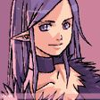

Itachi
Age : 17
Sexe : Homme
Race : Humain
Faction : Alliance
Formation : Voleur
Description :
Itachi Uchiwa :
A 12 ans, Itachi appartenais a un clan de ninja, les Anbu, où il était le chef.
Il massacas sa famille devans les yeux de son petit frére, a cause d'un défis lancer par son clan... Mais il laisser la vie a son petit frére pour qu'il puisse ce venger un jours .
Mais la soif de vengeance de son frére ne l'inquiéte pas car maintenant Itachi est un grand ninja.
Il fait partie d'une organisation secrète de Ninja surpuissant. Orochimaru, qui en faisait parti, le quitta car il ne supportait pas de voir quelqu'un de plus fort que lui Itachi.
Itachi est l'un des Ninja les plus puissant et est crain par un grand nombre de personnes ...
Plus d'infos sur Itachi >>>
Shïza
Age : 16
Sexe : Femme
Race : Elfe
Faction : Alliance
Formation : Voleur
Description : ... Say ce battais avec ardeur contre Nilian et ces fils pendant que les filles de la familles s'enfuiaient vers le Mont Hyjal.
Say arrivas au bout des résistance prodit par ces 6 elfes, il ce lancer donc a la recherche du reste de la famille ...
Les 3 soeur et leur mére arpenter les montagnes de Grange Bois en évitant les charognards ...
Say, dans une rage interminable tuas tous ce qui trouvas sur son chemin, il volait d'arbre en arbre, son sens lié à la nature lui permis de détecter les traces des elfes ...Il arrivait a Grangebois.
Les 4 elfes arrivaient au sommet du Mont Hyjal, mais Say y était déja arriver avans eux :
" Le brouillard ... il es là ! s'exclama l'une des soeur, je le retiens contunais sans moi ..."
Elles continuairent leur route vers le Mont Hyjal dans cette imposant brouillard ...Aux porte démoniaque Say les atendaient :
"Maintenant vous ne m'échaperées plus ! "
il sortas de sa cape une lame et ce jettas sur les elfes.
Au moment où Say levas son arme sur eux, une énorme ombre lui attrapas la main et une le brouillard s'éclairsis.
Une voix lui ordonnas de lacher son arme, et une femme apparus devans lui, Say la fixas de ces yeux rouge:
"- Qui est vous ?! interrogas Say.
- Aucun importance lache ton arme a present.
- Personne ne me donne d'orde !"
Say sortis une autre lame de sa cape et tranchas la main qui le retennais et ce jettas sur la femme et son démon.
Les 3 elfes profitairent de cette occasion pour ce sauver vers l'Arbre monde, où dans ces derniére force Filisia, la mére, accouchas prés du lac qui entoure l'Arbre monde.
Soudain la femme réaparus, elle leur informas qu'il n'y avais plus rien a craindre, que Say était mort, puis elle disparus.
La mére tenais dans ces bras son belle et tendre enfant qu'elle venais de métre au monde :" Shïza " c'est le nom qu'elle lui donnas.
L'une des soeur levas la tete où elle appairssus 2 ombres rouge vif, deux tigre rouge, ils s'approchairent tous 2 des elfes, les elfes les regardait comme des dieux, l'un des tigre pris l'enfant dans sa gueule, éblouis par les 2 bêtes la mére lachas l'enfant.
Soudain apparus Say ensanglenté et trachas les 2 bêtes, l'une des soeur lancas son sabre en plein dans le dos de Say, il tombas a genoux main contre le sol, elle courus vers Say pour l'achever mais un sarment de racine la collas au sol. Say ce levas et plantas son arme dans le corp de l'elfe puis achevas l'autre soeur et la mére.
Say ce dirigait vers le corp de l'enfant, levas son arme sur celui ci et soudain une auras rouge sortas des deux tigres fesant un bouclier autour de l'enfant. Say tapas un grand coup sur celui ci sans effet, il s'acharnas dessus, quand tout a coup l'auras rouge pris la forme des deux tigres. Say regardait cette puissance avec effroit, les deux tigres le transpersas, Say poussas un cris a faire glasser le sang, puis il tombas sur le sol ... l'auras s'impréniait dans le corp de l'enfant, puis les deux tigre ce relevérent ...
Shïza a maintenant 9 ans et vis avec un grand maitre ninja qui lui apprend l'art du Nunjitsu, un art du combat furtif, d'espionage et d'artisanat ...
Elle a était accueillis au sein de la SI:7 et est l'une des plus jeune espionne jamais vu dans cette agence d'espionnage ...
Les années passairent, Shïza a maintenant 16 ans et poursuit a grand pas son entrainement, pour devenir LA plus grande des Ninja.
Shïza ne connais pas son vrai passer ...
Plus d'infos sur Shïza >>>